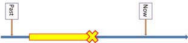

Presenting
If you have followed the section on planning, you will know that presenting a new piece of language or a new skill is a key part of any teacher's job. This section is designed to give you a few alternatives.
Don't lecture ...
In the picture above, the speaker is in the role of lecturer. He will probably not engage too much with his audience; interruptions, questions and requests for clarification will not be welcome. This is not your role.
... lead and explain
Learners are not empty vessels waiting to be filled. They are, usually, thinking, responding human beings who bring their own experience and knowledge to the classroom. If you ignore this simple fact you will make everyone's life seriously more difficult and frustrating.
 |
Some techniques |
   |
Task 1:
Here's an example of how someone presented new language in
the classroom. Read through the transcript of the opening part of the lesson and then answer the questions on the right. Make a note of your answers. |
| Teacher | Student | (Activity) | Text | Questions |
| Good morning everyone. How are
we all? (General mumbles and one or two "Fine. OK" comments.) OK? Good, right. I want to tell you a story so listen and see if you can understand. There are four questions so write some notes while you listen. (The teacher writes the following on the board: 1. Where was I? 2. Who was I with? 3. What was the problem? 4. How was the problem fixed?) Now, George, what are you going to do? George: Listen and write err ... answer, answers. Are you going to write whole sentences, Maria? Maria: No, notes only. Fine. OK. Here's the story. It's true, by the way. (Teacher reads the following from a script with some animation and quite a lot of stress on important events.) This happened when I was in Morocco with my girlfriend. We arrived from Spain and were standing in the queue for passport control. When we got to the front of the queue, a policeman suddenly appeared and pulled me out of the line. He said I wasn’t allowed in the country because my hair was too long! I was really upset and my girlfriend was already in Morocco and was waiting for me! The policeman told me I had to get my hair cut. In the end, I had to pay for someone to come and cut my hair. Then they let me into Morocco. We had a wonderful holiday after that in a very beautiful country. OK? Now take a minute to check your answers and then talk to a partner to see if you have the same. GO. (The students write and then start to discuss their answers.) |
When you have made a note of the answers to the questions, click here.
|
 |
Alternatives |
A personalised anecdote is not, of course, suitable for all lesson targets, although it worked very well in this case. There are alternatives.
- Using a video or a recorded listening.
For speaking lessons watching a dialogue or listening to one is a good way to set up a model and analyse the way the speakers use English. - Using a written text.
Even if the focus is not on reading skills, you can use a text to help the learners to notice the language you are targeting. They need help with that so highlight what you want them to notice as this teacher did. - Using visuals is, of course, a good way to introduce concepts (especially, but not only, things and events). For an example, see the first lesson idea in the planning section.
 |
Explaining |
Part of a presentation of something new is going to involve explaining the skill of the language. You need to be careful not to give in to the temptation to lecture and talk at people. They will get bored and restless.
You can't explain what you don't understand. Make sure you have looked at the guides on this site concerning what you are going to present and/or check in a book.
elicit what is known
The first phase of most explanations is to elicit what is already known. There are two reasons:
- It ensures that you aren't explaining something that the learners already know. That is a very dull thing to do.
- It reminds the learners of what they already know and it is
easier to accommodate new information into what is already
known.
For example:- You may want to explain the form of something like I
am going to take the train tomorrow. You could
set this out on the board like this:
Subject (I, you, we, it, Mary, the weather etc.) + be (am, is, are) + going to + infinitive verb (talk, rain, visit etc.) + object + adverb (tomorrow, next, over the weekend etc.) - That would work, especially if you talk it through as you write rather than simply shove it on the board and let the learners figure it all out.
- However, it is probably the case that your learners already know how to form a clause like I am writing and they already know what the subject and object of a verb are because they can make a sentence like I enjoy music. They probably also know quite a lot of time adverbials such as tomorrow, next week etc.
- So, you can elicit what they know as you go along and
insert what they don't know (probably
going to + infinitive)
so that the new information is accommodated, not learnt from
scratch. The phase might go:
- Write the word Subject
- Ask: What subjects can a verb have? Elicit pronouns, names and something inanimate like weather.
- Write the word be and elicit the three present tense forms (am, is, are)
- Write + going to + infinitive in a different colour and underline it. It's the target of all this.
- Ask: What's an infinitive? Can you give me an example? Elicit things like see, get, have, visit etc.
- Ask: What comes after the verb? Elicit the object. What sorts of objects can we use after take? Elicit words for things (the money, the train, a test etc.)
- Write the word tomorrow and ask: So am I talking about the present the past or the future? What other words can we use to talk about the future? Elicit, things like next week, next Sunday, on Thursday etc.
- If need be, repeat all this with a different model sentence, eliciting the five elements as you go along. Use a learner as the subject – it's involving.
- At the end, this bit of the board would look a bit
like this:

- You may want to explain the form of something like I
am going to take the train tomorrow. You could
set this out on the board like this:
explaining time and tense
One way to present and explain tense would follow neatly from the
lesson beginning with an anecdote which we have seen is to use a
pictorial way to represent concepts. For example, here the
distinction is being made between I watched and I was
watching.
For example, to represent something like He was standing in the
queue when the policeman pulled him out, you could have a
picture like this:

Note that it is clear that the action of standing stopped when
the policeman pulled him out.
To represent another concept of, e.g., He was standing in the
queue when he saw me, in which the standing action continues,
you could have a picture like this:

In both pictures it is clear when things happened. Hence the
labelling.
For much more on using time lines, see
the guide.
explaining other concepts
Diagrams and pictures can be used for many other concepts which
are otherwise difficult to grasp. For example, the difference
can, may, can't and must not can be presented
and explained using signs like:


and so on.
Teaching is creative so you need to come up with clear and engaging
ways of presenting language. That's not as easy as telling
people things but it is much more effective and engaging.
explaining differences
A lot of language is concerned with different strengths of expression. For example,
- the difference between frequently, often, usually, sometimes, never, rarely, seldom etc.
- the difference in certainty between I will come, I may come, I might come and I will definitely come
- the difference between big, large, wide, huge, enormous and tiny
can all be explained using visuals. Like this:


You can get the learners to come and stick the words on the board in either of the above ideas. That's also engaging.
Put these sentences with the right pictures:
|
|
 |
 |
 |
 |
 |
Checking understanding |
Don't assume that when you have explained something, it's been
learned.
For ways of checking whether something is understood, try concept-checking questions (CCQs in the trade).
Two examples:
- You have just taught the meaning of the verb in They
unearthed a whole new temple.
Some possible CCQs:- Did they dig the temple up or bury it?
- Does this verb take an object? Always?
- What else can you unearth, for example?
- What's the opposite of unearth?
- Can you unearth an idea? A fish? A secret? A reason?
- You have just introduced going to in a dialogue about
someone's plans for the evening.
Some possible CCQs:- How sure is he that he is going to the restaurant on the corner?
- When did he make the decision to go?
- Has he just decided to go or did he decide yesterday when he was invited?
- When did Mary invite him? Did he say Yes or No? When did he say Yes?
- Why did he agree to meet at the restaurant?
and so on. The purpose of a CCQ is to make it 100% clear to you and the learners that the concept has been grasped.
Summary of presenting
|
|
Task 2
Here's a bit of revision. Can you fill in the missing
bits in this table? Do it in your head or on paper and then click on the table to see if you are right. |

Now, if you like, you can move on to look at some ways of practising what you have presented and explained.